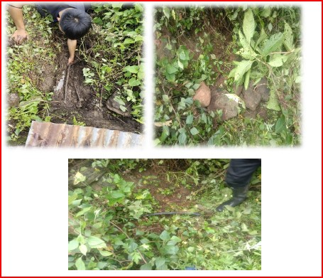

Water Supply Restoration
Date Conducted: 11th August, 2024
Numbers of members involved: 5 members
Place of Activity: Ritshangdung, Kanglung
Facebook Page: Social Service Unit (SSU)- Sherubtse College
Brief Report of the Activity
On 11th August, 2024, 5 members from SSU led by coordinator Mr. Sherab Loday and secretary Mr. Samten Wangchuk went to Ritshangdung to restore water supply for our beneficiary Mr. Tenzin. Our aim is to help the community to have reliable clean drinking water.
